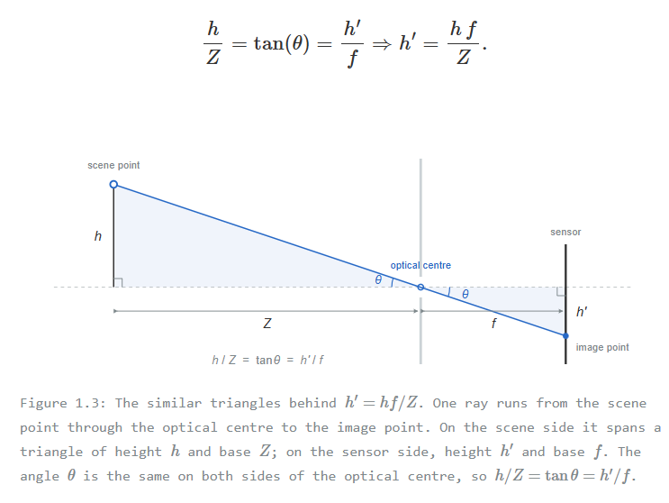

1.1.1 The pinhole camera
Light leaves every point of a scene in every direction. Hold a bare sensor up to it and no image forms: each point of the sensor receives light from every point of the scene, all summed together — Figure 1.1. An image requires correspondence: each sensor point receiving light from one scene point only. Much of what goes wrong with images — blur, noise — is correspondence partly lost.

The pinhole can provide the correspondence. Place an opaque barrier in front of the sensor and make a small hole. Of all the rays leaving a scene point, only the one aimed at the hole gets through, so each sensor position receives light from a single scene point, and an image forms. Rays from high scene points travel down through the hole and rays from low points travel up, so the image is inverted — Figure 1.2. This is the camera obscura, known for over a thousand years; what was missing until the 1820s was a way to make the image permanent.

The hole is called the aperture. The idealised point at the centre of the aperture is the optical centre — also referred to in the literature as the camera centre or centre of projection; all three terms are used interchangeably. The optical axis is the line that passes through the optical centre and is perpendicular to the sensor. The sensor itself is positioned behind the aperture at a distance equal to the focal length f
The rays form similar triangles on either side of the optical center. In Figure 1.3, the scene point, its foot on the optical axis, and the optical centre form a triangle with height h and base Z; past the aperture, the same ray forms a second triangle with height h' and base f. The triangles are similar, so

Doubling f doubles h' - zoom. Doubling Z halves it - perspective. In the widget below, the trace buttons draw both triangles with live numbers.
The same triangle also fixes how much of the scene fits on the sensor. A sensor of extent hs has its edge hs/2 from its optical axis, so the landing there leaves the optical centre at an angle whose tangent is hs/2f. Both edges together give the field of view:
FOV = 2 arctan(hs / 2f).
The sensor’s size is fixed by the hardware, so f alone decides it. On a 40 mm sensor, a 20 mm lens takes in 90°, a 50 mm lens 44°, and a 120 mm lens only 19°: a long lens magnifies by seeing less. Everything outside that wedge misses the sensor entirely. The field of view toggle in the widget below draws the two edge rays, running them backwards from the sensor edges into the scene.
An ideal pinhole passes one ray per scene point: sharp, but almost no light. Widening the hole admits a bundle per point, which lands as a disc about the size of the aperture — brighter and blurrier, and in the limit back to Figure 1.1. Shrinking has a floor too: below roughly 0.3 mm, diffraction blurs the image again. A lens escapes the compromise by gathering a wide bundle from each scene point and bending it back to a single sensor point (Figure 1.4) — the brightness of a wide aperture with the sharpness of a pinhole. It only works for scene points at the right distance, though; focus and depth of field are the lens’s problems, and we defer them.

From here on we take the projected image as given. The projection is continuous; making it discrete is the sensor’s job.